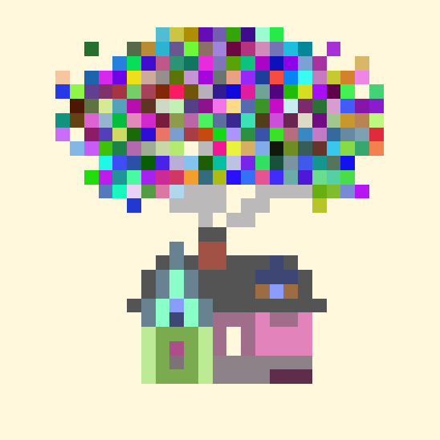

sticky-sketch
create unique patterns!
colour
rainbow
eraser
shade
clear sticky
16x16
share your creations here
sticky-sketch gallery
click then use arrow keys or click on the circles to see the different art pieces
